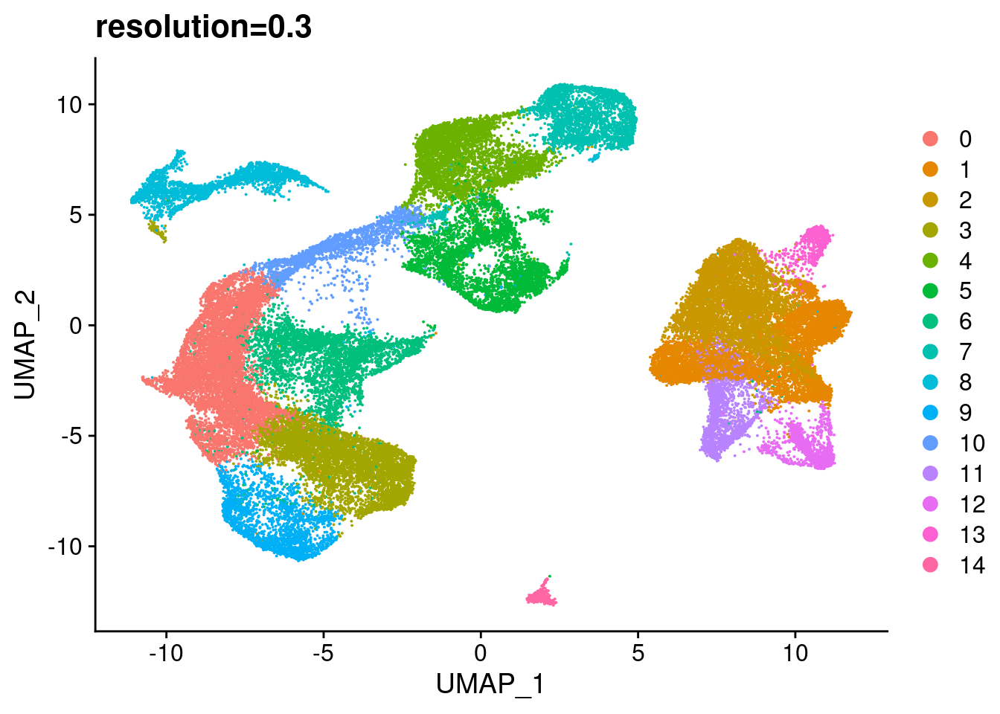
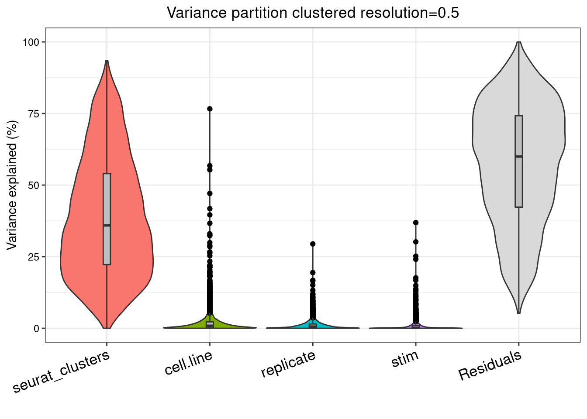
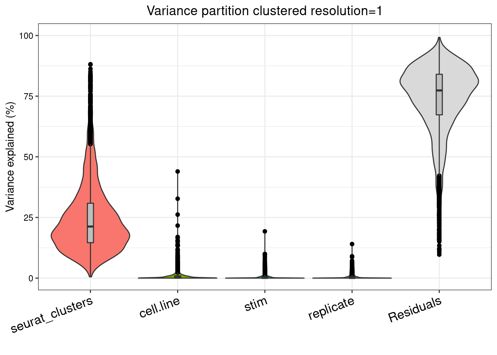

combine_experiments
Ben Umans
2021-07-09
Last updated: 2021-07-31
Checks: 7 0
Knit directory: Organoid_Stress_Pilot/
This reproducible R Markdown analysis was created with workflowr (version 1.6.2). The Checks tab describes the reproducibility checks that were applied when the results were created. The Past versions tab lists the development history.
Great! Since the R Markdown file has been committed to the Git repository, you know the exact version of the code that produced these results.
Great job! The global environment was empty. Objects defined in the global environment can affect the analysis in your R Markdown file in unknown ways. For reproduciblity it’s best to always run the code in an empty environment.
The command set.seed(20210705) was run prior to running the code in the R Markdown file. Setting a seed ensures that any results that rely on randomness, e.g. subsampling or permutations, are reproducible.
Great job! Recording the operating system, R version, and package versions is critical for reproducibility.
Nice! There were no cached chunks for this analysis, so you can be confident that you successfully produced the results during this run.
Great job! Using relative paths to the files within your workflowr project makes it easier to run your code on other machines.
Great! You are using Git for version control. Tracking code development and connecting the code version to the results is critical for reproducibility.
The results in this page were generated with repository version 5d8afa5. See the Past versions tab to see a history of the changes made to the R Markdown and HTML files.
Note that you need to be careful to ensure that all relevant files for the analysis have been committed to Git prior to generating the results (you can use wflow_publish or wflow_git_commit). workflowr only checks the R Markdown file, but you know if there are other scripts or data files that it depends on. Below is the status of the Git repository when the results were generated:
Ignored files:
Ignored: .DS_Store
Ignored: .Rhistory
Ignored: data/.DS_Store
Ignored: data/fastq/
Ignored: output/.DS_Store
Ignored: output/YG-BU-01_human/
Ignored: output/YG-BU-02_human/
Ignored: output/YG-BU-03_human/
Ignored: output/YG-BU-04_human/
Ignored: output/YG-BU-05_human/
Ignored: output/YG-BU-06_human/
Ignored: output/YG-BU-07_human/
Ignored: output/YG-BU-08_human/
Ignored: output/YG-BU-09_human/
Ignored: output/YG-BU-10_human/
Ignored: output/YG-BU-11_human/
Ignored: output/merged_full_dataset.RDS
Ignored: output/organoid.combined.full.sct.neuron.RDS
Ignored: output/organoid.combined.sct.neuron.markers.RDS
Ignored: output/organoid.combined.sct03.RDS
Ignored: output/organoid.combined.sct05.RDS
Ignored: output/organoid.combined.sct1.RDS
Untracked files:
Untracked: data/Snakefile_cellranger
Untracked: data/all.vcf.bed
Untracked: data/australia.rds
Untracked: data/cellranger.38.dict
Untracked: data/cluster.json
Untracked: data/config.yaml
Untracked: data/environment.yaml
Untracked: data/exclude_fulldata.rds
Untracked: data/human.unsorted.vcf
Untracked: data/human.vcf
Untracked: data/human.vcf.bed
Untracked: data/library9.rds
Untracked: data/log/
Untracked: data/mysterycell.rds
Untracked: data/organoid.combined.sct03.neuron.RDS
Untracked: data/organoid_combined_sct03.RDS
Untracked: data/reheaded.vcf
Untracked: data/snakelog.out
Untracked: data/snakemake_cellranger.batch
Untracked: data/sorted.vcf
Untracked: data/submit.sh
Untracked: data/unsorted.vcf
Untracked: data/unsorted_header
Untracked: data_S2/
Unstaged changes:
Modified: .gitignore
Modified: analysis/index.Rmd
Modified: analysis/precheck.Rmd
Modified: analysis/remove-mesenchyme.Rmd
Note that any generated files, e.g. HTML, png, CSS, etc., are not included in this status report because it is ok for generated content to have uncommitted changes.
These are the previous versions of the repository in which changes were made to the R Markdown (analysis/combine_experiments.Rmd) and HTML (docs/combine_experiments.html) files. If you’ve configured a remote Git repository (see ?wflow_git_remote), click on the hyperlinks in the table below to view the files as they were in that past version.
| File | Version | Author | Date | Message |
|---|---|---|---|---|
| Rmd | 5d8afa5 | Ben Umans | 2021-07-30 | Building all files for initial upload |
| Rmd | 38cb9d0 | Ben Umans | 2021-07-28 | Committing to move things online |
| Rmd | d97e0a5 | Ben Umans | 2021-07-14 | wflow_publish(files = c(“analysis/index.Rmd”, “analysis/combine_experiments.Rmd”, |
Combining demultiplexed Seurat objects
The data here were collected on three separate days, from three separate replicates, each consisting of three individuals. Demuxlet has already resolved each library into its constituent individuals by genotype, and now I’d need to combine the various libraries in order to test for consistency.
pacman::p_load(edgeR, variancePartition, BiocParallel, limma)
library(Seurat)
library(tidyverse)── Attaching packages ────────────────────────────────── tidyverse 1.3.1 ──✓ tibble 3.1.2 ✓ dplyr 1.0.7
✓ tidyr 1.1.3 ✓ stringr 1.4.0
✓ readr 1.4.0 ✓ forcats 0.5.1
✓ purrr 0.3.4 ── Conflicts ───────────────────────────────────── tidyverse_conflicts() ──
x purrr::accumulate() masks foreach::accumulate()
x readr::col_factor() masks scales::col_factor()
x dplyr::combine() masks Biobase::combine(), BiocGenerics::combine()
x purrr::discard() masks scales::discard()
x dplyr::filter() masks stats::filter()
x dplyr::lag() masks stats::lag()
x BiocGenerics::Position() masks ggplot2::Position(), base::Position()
x purrr::when() masks foreach::when()library(ggplot2)
library(RColorBrewer)
library(cowplot)
********************************************************Note: As of version 1.0.0, cowplot does not change the default ggplot2 theme anymore. To recover the previous behavior, execute:
theme_set(theme_cowplot())********************************************************library(knitr)control1 <- readRDS(file = "output/YG-BU-01_human/obj.rds")
#replace the names of all individuals with the actual line names
oldnames1 <- control1$individual
newnames1 <- str_replace(oldnames1, "SCM-10", "28126") %>% str_replace("SCM-12", "20157") %>% str_replace("SCM-13", "23555")
control1 <- AddMetaData(control1, newnames1, col.name = "cell.line")
control1$replicate <- "2"
control1$stim <- "control"
oxid1 <- readRDS(file = "output/YG-BU-02_human/obj.rds")
#replace the names of all individuals with the actual line names
oldnames2 <- oxid1$individual
newnames2 <- str_replace(oldnames2, "SCM-10", "28126") %>% str_replace("SCM-12", "20157") %>% str_replace("SCM-13", "23555")
oxid1 <- AddMetaData(oxid1, newnames2, col.name = "cell.line")
oxid1$replicate <- "2"
oxid1$stim <- "oxidation"
pff1 <- readRDS(file = "output/YG-BU-03_human/obj.rds")
#replace the names of all individuals with the actual line names
oldnames3 <- pff1$individual
newnames3 <- str_replace(oldnames3, "SCM-10", "28126") %>% str_replace("SCM-12", "20157") %>% str_replace("SCM-13", "23555")
pff1 <- AddMetaData(pff1, newnames3, col.name = "cell.line")
pff1$replicate <- "2"
pff1$stim <- "pff"
control2 <- readRDS(file = "output/YG-BU-06_human/obj.rds")
#replace the names of all individuals with the actual line names
oldnames6 <- control2$individual
newnames6 <- str_replace(oldnames6, "SCM-10", "28126") %>% str_replace("SCM-12", "20157") %>% str_replace("SCM-13", "23555")
control2 <- AddMetaData(control2, newnames6, col.name = "cell.line")
control2$replicate <- "3"
control2$stim <- "control"
oxid2 <- readRDS(file = "output/YG-BU-07_human/obj.rds")
#replace the names of all individuals with the actual line names
oldnames7 <- oxid2$individual
newnames7 <- str_replace(oldnames7, "SCM-10", "28126") %>% str_replace("SCM-12", "20157") %>% str_replace("SCM-13", "23555")
oxid2 <- AddMetaData(oxid2, newnames7, col.name = "cell.line")
oxid2$replicate <- "3"
oxid2$stim <- "oxidation"
control3 <- readRDS(file = "output/YG-BU-09_human/obj.rds")
#replace the names of all individuals with the actual line names
oldnames9 <- control3$individual
newnames9 <- str_replace(oldnames9, "SCM-10", "28126") %>% str_replace("SCM-12", "20157") %>% str_replace("SCM-13", "23555")
control3 <- AddMetaData(control3, newnames9, col.name = "cell.line")
control3$replicate <- "4"
control3$stim <- "control"
oxid3 <- readRDS(file = "output/YG-BU-10_human/obj.rds")
#replace the names of all individuals with the actual line names
oldnames10 <- oxid3$individual
newnames10 <- str_replace(oldnames10, "SCM-10", "28126") %>% str_replace("SCM-12", "20157") %>% str_replace("SCM-13", "23555")
oxid3 <- AddMetaData(oxid3, newnames10, col.name = "cell.line")
oxid3$replicate <- "4"
oxid3$stim <- "oxidation"
pff3 <- readRDS(file = "output/YG-BU-11_human/obj.rds")
#replace the names of all individuals with the actual line names
oldnames11 <- pff3$individual
newnames11 <- str_replace(oldnames11, "SCM-10", "28126") %>% str_replace("SCM-12", "20157") %>% str_replace("SCM-13", "23555")
pff3 <- AddMetaData(pff3, newnames11, col.name = "cell.line")
pff3$replicate <- "4"
pff3$stim <- "oxidation"
combined.data <- list(control1, control2, control3, oxid1, oxid2, oxid3, pff1, pff3)
rm(control1, control2, control3, oxid1, oxid2, oxid3, pff1, pff3)Because each of these datasets was prepared using SCTransform it should be straightforward to now integrate them. Following the guide from the Satija lab for integrating these datasets, I run the following steps:
features <- SelectIntegrationFeatures(object.list = combined.data, nfeatures = 3000, verbose = F)
combined.data <- PrepSCTIntegration(object.list = combined.data, anchor.features = features)
organoid.anchors <- FindIntegrationAnchors(object.list = combined.data, normalization.method = "SCT",
anchor.features = features)
organoid.combined.sct <- IntegrateData(anchorset = organoid.anchors, normalization.method = "SCT")
rm(combined.data)With the combined data I now look run through the normal workflow to find clusters.
organoid.combined.sct <- RunPCA(organoid.combined.sct, npcs = 60)
organoid.combined.sct <- RunUMAP(organoid.combined.sct, reduction = "pca", dims = 1:45)
DimPlot(organoid.combined.sct, reduction = "umap", group.by = "stim")
DimPlot(organoid.combined.sct, reduction = "umap", group.by = "replicate")And now we can look for clusters:
#organoid.combined.sct <- FindNeighbors(organoid.combined.sct, dims=1:65)
organoid.combined.sct03 <- readRDS("output/organoid.combined.sct03.RDS")
organoid.combined.sct05 <- readRDS("output/organoid.combined.sct05.RDS")
organoid.combined.sct1 <- readRDS("output/organoid.combined.sct1.RDS")
#organoid.combined.sct03 <- FindClusters(organoid.combined.sct, resolution=0.3)
DimPlot(organoid.combined.sct03, reduction = "umap") + ggtitle("resolution=0.3")
#organoid.combined.sct05 <- FindClusters(organoid.combined.sct, resolution=0.5)
DimPlot(organoid.combined.sct05, reduction = "umap") + ggtitle("resolution=0.5")#organoid.combined.sct1 <- FindClusters(organoid.combined.sct, resolution=1)
DimPlot(organoid.combined.sct1, reduction = "umap") + ggtitle("resolution=1")A lot of these possibilities seem reasonable. Can cluster markers give us any idea of which of them make sense to pursue?
organoid.combined.sct03.markers <- FindAllMarkers(organoid.combined.sct03, only.pos = TRUE, min.pct = 0.25, logfc.threshold = 0.25)
organoid.combined.sct03.markers %>% group_by(cluster) %>% top_n(n = 5, wt = avg_logFC) %>% kable()
organoid.combined.sct05.markers <- FindAllMarkers(organoid.combined.sct05, only.pos = TRUE, min.pct = 0.25, logfc.threshold = 0.25)
organoid.combined.sct05.markers %>% group_by(cluster) %>% top_n(n = 5, wt = avg_logFC) %>% kable()
organoid.combined.sct1.markers <- FindAllMarkers(organoid.combined.sct1, only.pos = TRUE, min.pct = 0.25, logfc.threshold = 0.25)
organoid.combined.sct1.markers %>% group_by(cluster) %>% top_n(n = 5, wt = avg_logFC) %>% kable()Cell health, or otherwise
Are these cells hopelessly dead or otherwise inviable? Let’s look at some markers of cell death and distress. I looked to Machado et al. and van den Brink et al. for some marker genes
FeaturePlot(organoid.combined.sct03, features = c("sct_DAP"), max.cutoff = 5, split.by = "stim")FeaturePlot(organoid.combined.sct03, features = c("sct_CASP1"), max.cutoff = 5, split.by = "stim")FeaturePlot(organoid.combined.sct03, features = c("sct_BCL10"), max.cutoff = 5, split.by = "stim")FeaturePlot(organoid.combined.sct03, features = c("sct_CARD10"), max.cutoff = 5, split.by = "stim")FeaturePlot(organoid.combined.sct03, features = c("sct_HIF1A"), max.cutoff = 5, split.by = "stim")FeaturePlot(organoid.combined.sct03, features = c("sct_ATF3"), max.cutoff = 5, split.by = "stim")FeaturePlot(organoid.combined.sct03, features = c("sct_SOCS3"), max.cutoff = 5, split.by = "stim")FeaturePlot(organoid.combined.sct03, features = c("sct_ZFP36"), max.cutoff = 5, split.by = "stim")FeaturePlot(organoid.combined.sct03, features = c("sct_EGR1"), max.cutoff = 5, split.by = "stim")FeaturePlot(organoid.combined.sct03, features = c("sct_KLF4"), max.cutoff = 5, split.by = "stim")FeaturePlot(organoid.combined.sct03, features = c("sct_UBC"), split.by = "stim")FeaturePlot(organoid.combined.sct03, features = c("sct_HSP90AB1"), split.by = "stim")FeaturePlot(organoid.combined.sct03, features = c("sct_STAT3"), max.cutoff = 5, split.by = "stim")While there are some genes that are expressed fairly widely, actually a good number of these stress markers appear to be enriched in the stress treatment conditions, and particularly enriched in the weird mesenchymal cluster. This is not really convincing or direct evidence that my neurons are “healthy” per se, but it’s a little reassuring and might even indicate that the treatments were (at least at the margin) effective.
Obtain Pseudobulk counts
Now that we’ve assigned clusters to each cell from each data collection, we want to go back to get the raw data for use in differential expression testing. Kenneth wrote a code snippet to do this. His code takes a Seurat object and a list of all the desired metadata columns that you want to subdivide, and it returns a matrix of pseudobulked counts (gene rows, columns as the cross product of all the metadata factors specified) and list of metadata.
generate.pseudobulk <- function(object, labels, assay="RNA",slot="counts") {
factorlist <- list()
for (i in labels) factorlist[[i]] <- unique(object@meta.data[,i])
meta <- expand.grid(factorlist, stringsAsFactors = FALSE)
rownames(meta) <- apply(meta, 1, function(x) paste0(x, collapse = '.'))
# build the output matrix
n <- nrow(meta)
out <- matrix(nrow=dim(object[[assay]])[1], ncol=n, data=0)
rownames(out) <- rownames(object[[assay]])
colnames(out) <- rownames(meta)
ncells <- c()
total.cells <- dim(object[[assay]])[2]
for (i in 1:n)
{
#prog(i,n)
cells <- 1:total.cells
for (j in names(meta)) {
keep <- which(object@meta.data[[j]] == meta[i,j])
cells <- cells[cells %in% keep]
}
ncells[i] <- length(cells)
#some other thing to measure
if (length(cells)==1) {
out[,i] <- slot(object[[assay]], slot)[,cells]
} else {
out[,i] <- Matrix::rowSums(slot(object[[assay]], slot)[,cells])
}
}
meta$ncells <- ncells
#add that something else as metadata
return(list(counts=out, meta=meta))
}
# keep only levels with more than 'threshold' cells
filter.pseudobulk <- function(pseudobulk, threshold = 0) {
w <- which(pseudobulk$meta$ncells > threshold)
pseudobulk$counts <- pseudobulk$counts[,w]
pseudobulk$meta <- pseudobulk$meta[w,]
pseudobulk
}pseudo3 <- generate.pseudobulk(organoid.combined.sct03, labels = c("cell.line", "stim", "replicate", "seurat_clusters"))
pseudo3 <- filter.pseudobulk(pseudo3)
d03 <- DGEList(pseudo3$counts)
d03 <- calcNormFactors(d03)
keep3 <- filterByExpr(d03$counts)
d03 <- d03[keep3,]
param = SnowParam(20, "SOCK", progressbar=TRUE)
register(param)
fbase <- ~ (1|cell.line) + (1|stim) + (1|seurat_clusters) + (1|replicate)
voomed3 <- voomWithDreamWeights(d03, fbase, pseudo3$meta, plot=TRUE)Memory usage to store result: > 208 Mb
Dividing work into 100 chunks...
Total: 111 svarpart3 <- fitExtractVarPartModel(voomed3, fbase, pseudo3$meta)Dividing work into 100 chunks...
Total: 137 svp3 <- sortCols(varpart3)
plotPercentBars(vp3[1:10,])plotVarPart(vp3) + ggtitle("Variance partition clustered resolution=0.3")pseudo5 <- generate.pseudobulk(organoid.combined.sct05, labels = c("cell.line", "stim", "replicate", "seurat_clusters"))
pseudo5 <- filter.pseudobulk(pseudo5)
d05 <- DGEList(pseudo5$counts)
d05 <- calcNormFactors(d05)
keep5 <- filterByExpr(d05$counts)
d05 <- d05[keep5,]
fbase <- ~ (1|cell.line) + (1|stim) + (1|seurat_clusters) + (1|replicate)
voomed5 <- voomWithDreamWeights(d05, fbase, pseudo5$meta, plot=TRUE)Memory usage to store result: > 236.2 Mb
Dividing work into 100 chunks...
Total: 119 svarpart5 <- fitExtractVarPartModel(voomed5, fbase, pseudo5$meta)Dividing work into 100 chunks...
Total: 149 svp5 <- sortCols(varpart5)
plotPercentBars(vp5[1:10,])
plotVarPart(vp5) + ggtitle("Variance partition clustered resolution=0.5")
pseudo1 <- generate.pseudobulk(organoid.combined.sct1, labels = c("cell.line", "stim", "replicate", "seurat_clusters"))
pseudo1 <- filter.pseudobulk(pseudo1)
d1 <- DGEList(pseudo1$counts)
d1 <- calcNormFactors(d1)
keep1 <- filterByExpr(d1$counts)
d1 <- d1[keep1,]
fbase <- ~ (1|cell.line) + (1|stim) + (1|seurat_clusters) + (1|replicate)
voomed1 <- voomWithDreamWeights(d1, fbase, pseudo1$meta, plot=TRUE)Memory usage to store result: > 254.5 Mb
Dividing work into 100 chunks...
Total: 121 svarpart1 <- fitExtractVarPartModel(cpm(d1$counts, log=TRUE), fbase, pseudo1$meta)Dividing work into 100 chunks...
Total: 117 svp1 <- sortCols(varpart1)
plotPercentBars(vp1[1:10,])
plotVarPart(vp1) + ggtitle("Variance partition clustered resolution=1")
saveRDS(organoid.combined.sct1, file = "output/organoid.combined.sct1.RDS")
saveRDS(organoid.combined.sct03, file = "output/organoid.combined.sct03.RDS")
saveRDS(organoid.combined.sct05, file = "output/organoid.combined.sct05.RDS")Summary, discussion with Yoav
This is not what we expect, not at all. Discussed with Kenneth and Yoav. Yoav suggested this is not the right way to analyze the data. First of all, because cluster composition and membership are likely confounded with cell line and treatment, the analysis should be done on each cluster separately. Maybe the right way to start is to use large manually selected clusters.
Second, getting at a similar issue, Yoav suggests trying to ascertain whether the mean expression values in each cluster are stable with regards to cell number by jacknifing to generate the pseudobulk data.
Finally, Yoav suggests comparing these variancePartition results to the results obtained by PCA. If these are consistent, then PC2 should correspond to cluster and PC1 should correspond to…something else. Can compare to the experimental meta-data to try to figure out what that is. If PC2 is not Seurat cluster, then something doesn’t add up.
sessionInfo()R version 3.6.1 (2019-07-05)
Platform: x86_64-pc-linux-gnu (64-bit)
Running under: Scientific Linux 7.4 (Nitrogen)
Matrix products: default
BLAS/LAPACK: /software/openblas-0.2.19-el7-x86_64/lib/libopenblas_haswellp-r0.2.19.so
locale:
[1] LC_CTYPE=en_US.UTF-8 LC_NUMERIC=C
[3] LC_TIME=en_US.UTF-8 LC_COLLATE=en_US.UTF-8
[5] LC_MONETARY=en_US.UTF-8 LC_MESSAGES=en_US.UTF-8
[7] LC_PAPER=en_US.UTF-8 LC_NAME=C
[9] LC_ADDRESS=C LC_TELEPHONE=C
[11] LC_MEASUREMENT=en_US.UTF-8 LC_IDENTIFICATION=C
attached base packages:
[1] parallel stats graphics grDevices utils datasets methods
[8] base
other attached packages:
[1] knitr_1.23 cowplot_1.0.0
[3] RColorBrewer_1.1-2 forcats_0.5.1
[5] stringr_1.4.0 dplyr_1.0.7
[7] purrr_0.3.4 readr_1.4.0
[9] tidyr_1.1.3 tibble_3.1.2
[11] tidyverse_1.3.1 Seurat_3.1.3
[13] BiocParallel_1.18.0 variancePartition_1.14.1
[15] Biobase_2.44.0 BiocGenerics_0.30.0
[17] scales_1.1.1 foreach_1.5.1
[19] ggplot2_3.3.5 edgeR_3.26.5
[21] limma_3.40.6 workflowr_1.6.2
loaded via a namespace (and not attached):
[1] snow_0.4-3 readxl_1.3.1 backports_1.2.1
[4] plyr_1.8.6 igraph_1.2.4.1 lazyeval_0.2.2
[7] splines_3.6.1 listenv_0.7.0 digest_0.6.27
[10] htmltools_0.5.1.1 gdata_2.18.0 fansi_0.5.0
[13] magrittr_2.0.1 cluster_2.1.0 doParallel_1.0.14
[16] ROCR_1.0-7 globals_0.12.4 modelr_0.1.8
[19] RcppParallel_5.1.4 prettyunits_1.1.1 colorspace_2.0-2
[22] rvest_1.0.0 rappdirs_0.3.1 ggrepel_0.8.1
[25] haven_2.3.1 xfun_0.24 crayon_1.4.1
[28] jsonlite_1.7.2 lme4_1.1-21 survival_3.2-11
[31] zoo_1.8-6 iterators_1.0.13 ape_5.4-1
[34] glue_1.4.2 gtable_0.3.0 leiden_0.3.1
[37] future.apply_1.3.0 DBI_1.1.0 bibtex_0.4.2
[40] Rcpp_1.0.6 metap_1.1 viridisLite_0.3.0
[43] progress_1.2.2 reticulate_1.16 rsvd_1.0.1
[46] tsne_0.1-3 htmlwidgets_1.5.3 httr_1.4.2
[49] gplots_3.0.1.1 ellipsis_0.3.2 ica_1.0-2
[52] farver_2.1.0 pkgconfig_2.0.3 uwot_0.1.5
[55] dbplyr_2.1.1 locfit_1.5-9.1 utf8_1.1.4
[58] labeling_0.4.2 tidyselect_1.1.0 rlang_0.4.11
[61] reshape2_1.4.4 later_1.2.0 cellranger_1.1.0
[64] munsell_0.5.0 tools_3.6.1 cli_2.5.0
[67] generics_0.1.0 pacman_0.5.1 broom_0.7.8
[70] ggridges_0.5.1 evaluate_0.14 yaml_2.2.1
[73] npsurv_0.4-0 fs_1.3.1 fitdistrplus_1.0-14
[76] caTools_1.17.1.2 RANN_2.6.1 pbapply_1.4-0
[79] future_1.14.0 nlme_3.1-140 whisker_0.3-2
[82] xml2_1.3.2 rstudioapi_0.13 compiler_3.6.1
[85] pbkrtest_0.4-7 plotly_4.9.4.1 png_0.1-7
[88] lsei_1.2-0 reprex_2.0.0 stringi_1.6.2
[91] lattice_0.20-38 Matrix_1.2-18 nloptr_1.2.2.1
[94] vctrs_0.3.8 pillar_1.6.1 lifecycle_1.0.0
[97] Rdpack_0.11-0 lmtest_0.9-37 RcppAnnoy_0.0.12
[100] data.table_1.14.0 bitops_1.0-6 irlba_2.3.3
[103] gbRd_0.4-11 httpuv_1.6.1 colorRamps_2.3
[106] R6_2.5.0 promises_1.2.0.1 KernSmooth_2.23-15
[109] gridExtra_2.3 codetools_0.2-16 boot_1.3-23
[112] MASS_7.3-51.4 gtools_3.8.1 assertthat_0.2.1
[115] rprojroot_2.0.2 withr_2.4.2 sctransform_0.2.0
[118] hms_1.1.0 grid_3.6.1 minqa_1.2.4
[121] rmarkdown_1.13 Rtsne_0.15 git2r_0.26.1
[124] lubridate_1.7.10